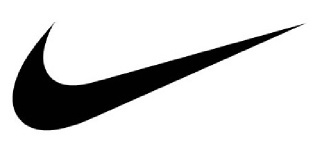
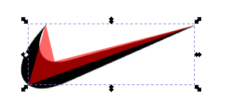
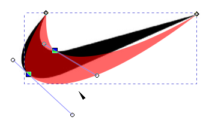
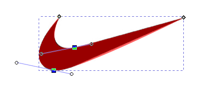
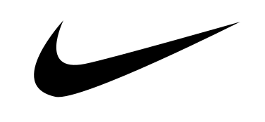

5. Logotip de Nike¶

; BR |
Obrim un nou document amb Inkscape.
; BR |
Copieu el logotip de Nike al nou document per servir de model.
; BR |
Amb l’eina per dibuixar corbes i línies | Botons-Lines | Dibuixem un polígon amb quatre punts tal com mostra la imatge.

Al menú `` Objecte ... farcit i vora ... `Canviarem el color del farcit a vermell amb transparència a 60 i sense vora. D’aquesta manera podem veure les dues figures alhora mentre treballem amb el disseny del vector.
; BR |
Per continuar seleccionant l'eina d'edició de nodes | Botó-edit-nodes |, seleccionem els nodes centrals i suavitzem els nodes amb el botó de la barra superior | Botó-suaviR-nodes |.
Els nodes mostraran ara dos tiradors cadascun i la xifra es corba al seu voltant.

; BR |
Ara només haurem de moure les nanses rodones de cada node de manera que coincideixin les corbes de les dues figures.
És possible que durant l’ajust sigui necessari traslladar els nodes a una posició més avantatjosa. Poc a poc les figures es veuran cada cop més.

; BR |
Una vegada que la nostra figura vectorial coincideix amb el logotip, amb l’eina seleccionada | Selecció de botons | Moure el nou disseny per poder esborrar el logotip a la imatge del mapa de bits.
Ara canviem el dibuix de color vermell a la transparència, de manera que el disseny s’acabarà.
